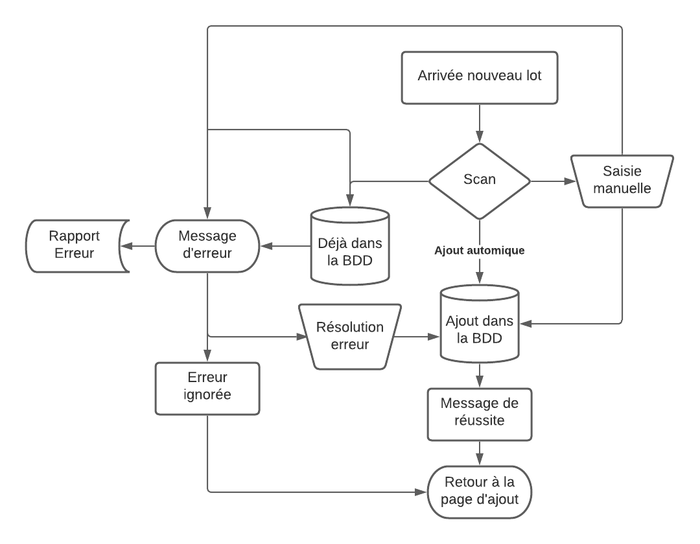

Afin d'être efficace dans la construction d'un algorithme, il est important d'utiliser des méthodes.
Les débuts dans la constitution de méthodes datent d'environ 1940, notamment grâce à la thèse de Church-Turing.
C'est à peu près à cette période qu'est apparu le concept de métalangage.
Ceux-ci nous permettent de définir les séquences d'instructions de notre algorithme, par le biais de mots simples et explicites.
Exemple :
A1- Choix langue
A2- Insertion carte
A3- Entrée code carte
...
Afin de mettre notre projet en perspective, nous utilisons des logigrammes
Un logigramme peut être :
un organigramme (une représentation schématique)
une carte mentale (arbre heuristique)
un intégramme (un jeu de logique)
un organigramme de programmation (ci-dessous)

À l'aide des explications contenues dans ce lien, vous devez dessiner le logigramme relatif à votre travail sur Actiona.